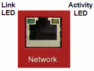
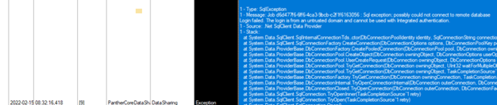

Panther Link Fails to Join Data Sharing Group
Error Code
No error code.
An error has occurred when joining the group. Please contact Technical Support for assistance.
Complaint Description
Panther reports,when you attempt to join a Data Sharing Group, An error has occurred when joining the group. Please contact Technical Support for assistance.
TABLE OF CONTENTS
Technical Support
Verify Physical Connectivity of Network Devices
There could be a bad ethernet cable, or the network devices are not correctly plugged into the appropriate network device, or that the network devices are off.
Resolution
Check Network Device Connectivity:
Verify that the Panther is properly plugged into the next network device.
A Panther Link connected system should be connected to a 24-port Cisco switch on ports 1-16. Look for the presence of link lights on either the switch or the Panther.

Example of Network Interface Card Link Lights
Test
Re-attempt to join Data Sharing Group.
Field Service
Note: Panther systems being upgraded from 7.1 to 7.2+ have incompatible Data Sharing databases. That is, Panther systems on SW 7.2 cannot be joined to a Data Sharing group created on SW 7.1. In this situation, the only course of action is to recreate a new Data Sharing Group, beginning with 7.2.
Network Interface Card (NIC) IP Address Configuration
If the Panther NIC IP address is not configured correctly, the Panther system joining the Data Sharing group may be unable to detect the others in the network.
Resolution
Configure or validate the NIC IP Address:
- At the Panther Command Prompt, type “control ncpa.cpl”.
- Right-click on the NIC and click “Properties.”
- Click on Internet Protocol Version 4 (TCP/IPv4) and click “Properties”.
- Click the radio button for “Use the following IP address:” and input the following addresses-
- IP address: 172.23.1.X

Note—The IP address is system configuration specific. Please refer to the generated instructions.txt file when programming the firewall to determine the IP address. - Subnet mask: 255.255.255.0
- Default gateway: 172.23.1.1
- IP address: 172.23.1.X
Test
Re-attempt to join Data Sharing Group.
Check for Remote Desktop Protocol (RDP) Software
One of the Panther systems has RDP software installed. Installing RDP software changes the Windows password for the credentials being used. Normally, when a Panther attempts to join the Data Sharing group, it will use the standard credential instead of the RDP credential. For Data Sharing to work, either all the systems need RDP installed, or none of the systems can have RDP installed.
Check for the following:
-
Review Data Sharing logs from PantherLogs package (Data Sharing logs must be explicitly checked when sending logs). Review the logs for an SQL Exception: …could not connect to remote database...The login is from an untrusted domain and cannot be used with integrated authentication.

-
At the Command Prompt, enter the command “netplwiz”. This will bring up the User Accounts window. Look for the username “RemoteUser”. If this username is present, the RDP software was installed.
-
At the Command Prompt, enter the command “services.msc”. This will bring up the Windows Services configurations. Look for ‘Remote Desktop Configuration”, “Remote Desktop Services” and “Remote Desktop Services UserMode Port Redirector.” If these services are present, the RDP software was installed.
There is no way to remove RDP from the Panther system after being installed; either install RDP on the remaining Panthers, or re-image all workstations.
Resolution
Install RDP on all Panthers, or re-image all Panthers and do not install RDP.
Test
Re-attempt to join Data Sharing Group.
 button at the top of the page to send feedback, comments, or change requests.
button at the top of the page to send feedback, comments, or change requests.